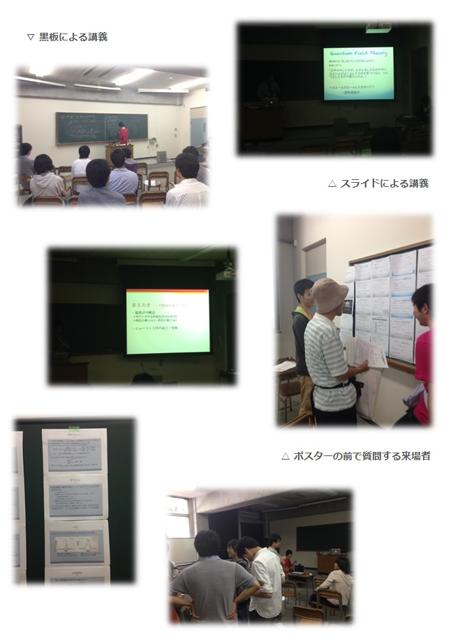

数物セミナー秋の談話会2013 in 慶應 矢上祭特別編
お知らせ
Ustream配信を録画したアーカイブや、講義資料、
スライドなどはこちらからご利用できます。
◇談話会当日の様子を撮影した写真と、企画者からのご挨拶を掲載しました。(10/22)
企画者からのご挨拶
どうも、矢上祭談話会担当だった益岡幸弘です。
数物セミナー秋の談話会 in 慶應 2013 ～矢上祭なのでテンションあがっちゃったよスペシャル～にお越しになった皆様、また、Ustream配信をご覧になった皆様、本当にありがとうございました。
おかげさまで、70名弱の方々にご来場いただき、まずまずの成功だった感じております。
また、今回新たな試みとして行ったUstream配信も画質や機材の設備等に問題があったものの基本的には好意的に受け止められていると聞いております。
今回の談話会は矢上祭の一企画として、開催させていたので、いつもはいらっしゃらないような世代の方々―高校生やご年配の方など―にお越しいただいて、とても新鮮な談話会となりました。そういった方々に私たちの企画を楽しんでいただけたか、若干の不安はありますが―講演内容が難しかったので―議論なども発生していたようですので、少なくとも幾人かの方には好評だったのではないかと思います。
来年、矢上祭で談話会を開催するかどうかにつきましては、次世代の後輩に一任いたしますが、私個人といたしましては、是非開催してほしいと考えています。
最後に、今回の談話会開催に際して、矢上祭実行委員の方をはじめ様々な方にお世話になりました。この場でいちいち挙げることはいたしませんが、本当に感謝しております。誠にありがとうございました。
それではみなさん、また、楽しい数学、物理の時間を一緒に過ごしましょう。
数物セミナー秋の談話会 in 慶應 2013
～矢上祭なのでテンションあがっちゃったよスペシャル～担当
益岡幸弘
日にち・場所
2013年10月12日(土)・13日(日)
矢上キャンパス12棟207教室
タイムテーブル
| 12日(土) | |
| 12:30～13:45 |
『測度論に入門』 伊敷喜斗(埼玉大学数学科2年) 対象学年: 大学1年生～ Ustreamアーカイブ |
| 14:05～15:20 |
『固体のQFT入門 -びよ～んびよ～ん-』 福井毅勇(早稲田大学先進理工学部応用物理学科2年) 対象学年: 大学2年生～ |
| 15:40～16:55 |
『リー群ってなんだろう』 飛嶋健司(埼玉大学物理学科3年) 対象学年: 数学・物理学科の大学2年生～ Ustreamアーカイブ 発表スライド |
| 17:15～18:30 |
『灼熱の熱学史 ～誰が熱を見たでしょう～』 花里太郎(慶應義塾大学理工学部物理学科3年) 対象学年: 大学1年生～ Ustreamアーカイブ 発表スライド |
| 13日(日) | |
| 10:30～11:45 |
『物理における群論入門』 松永拓(慶應義塾大学理工学部物理学科3年) 対象学年: 大学2年生～ Ustreamアーカイブ 発表スライド ※機材の不調により、本講義のUstream配信には音声が入っておりません。申し訳ございません。 |
| 13:00～14:15 |
『微分幾何と相対論』 山室孝之(東京理科大学理学部第一部数学科3年) 対象学年: 物理学科の2年生～ Ustreamアーカイブ 講義資料 |
| 14:35～15:50 |
『ＣＭＢで眺める宇宙』 向江志朗(早稲田大学物理学科3年) 対象学年: 高校物理履修者～大学2年生 |
| 16:10～17:25 |
『よくわかれ！ふかんぜんせいていり』 益岡幸弘(慶應義塾大学理工学部数理科学科3年) 対象学年: 大学1年生～ Ustreamアーカイブ 発表スライド |
ギャラリー

講演アブストラクト
測度論に入門
伊敷喜斗 (埼玉大学数学科2年)
測度論です。初心者向けです。発表者の僕が初心者という新感覚の発表をお楽しみください。
僕が知ってる限り、和書の測度論の本は、ほとんど存在していなくて、と言うのも、もっぱらルベーグ積分という表題の本に測度の理論が載っているようです。その本も、やはり、測度論というよりはルベーグ積分を主として、そのおまけのような感じで測度論を展開しているようです。もしくは僕が本をあまり読まないだけかも。
そのような展開の仕方は、歴史を鑑みると実に妥当に思われますが、ルベーグ測度の構成や性質に一生懸命で生憎とても分かりづらく、ルベーグ測度が強調され過ぎのきらいがあると思います。（それはやはりもっぱらルベーグ測度しか活躍しないからでしょうか。よくわかりません。）
測度は集合の大きさ、初期ははもっぱら一次元のユークリッド空間の部分集合の長さをどのように定義するかという試行錯誤の結果、リーマン積分よりもより良く、扱いやすいルベーグ積分が誕生し人類は測度という長さ、面積、体積よりも一般的な概念に到達しました。今回はその測度論のあらましをあまりルベーグ測度に偏ること無く
やさしく発表しようと思います。むしろルベーグ測度には触れないかもしれません。
測度空間から、可測函数、一般の測度に対する積分、色んな測度の例など。優収束定理の証明を取り敢えずの目標としたいと思います。目標はコロコロ変わったりしますので、当日のお楽しみに☆
ところでこれは数物セミナーの談話会ですが、物理と数学を行ったり来たりしてると測度は速度と間違えられやすくて、可測は加速と間違えられやすいです。
この測度という便利な概念は関数解析や、そして確率論において重宝されています。
むしろ、確率論は測度の概念によって初めて数学になったのでは無いのでしょうか。
それとも僕が高校で習った何やってんのかわかんない確率が嫌いなだけなのでしょうか。
全然関係ないんですが、数学科は理学部に属されていますが、数学ってホントに理系の学問なのでしょうか。
そんなのはどうでもよくて、僕は数学を人間の純粋な理性から、心から、生まれたものと断りも入れず勝手に思い込んでいます。
ともすれば数学の発展というのは、心の拡大、認識の拡大、つまりより俯瞰した視点への移行になると思います。”大きさ”から測度に移行することにより、どのように俯瞰できるのか、見てみましょう。
そう言う割には、一番用いられるであろうルベーグ測度は中々なおざりにします。
奥田民生曰く歌は心ですが、数学も心です。たぶん。
固体のQFT入門 -びよ～んびよ～ん-
福井毅勇 (早稲田大学先進理工学部応用物理学科2年)
場の量子論と言うと相対論的量子論や素粒子理論を連想されることが多いと思うが、ここでは非相対論的な場の量子論にスポットを当てる。場の量子論を導入する上で基礎となる量子力学の簡単な復習を行ってから、固体の物理に現れる非相対論的な場の量子論の簡単な導入を目指す。場の量子化、第二量子化とはどのようなことかを明らかにして場の量子論の考え方の基礎を紹介し、簡単な例を挙げる。
リー群ってなんだろう
飛嶋健司 (埼玉大学物理学科3年)
皆さん一度は「リー群」という言葉を聞いた事があると思います。リー群とは、簡単に言ってしまえば多様体でかつ群、ということになります。
この講演ではリー群とはどんなものなのかを解説したいと思います。一般のリー群から入ると予備知識が多めに必要なので、線形リー群と呼ばれるものをまず定義して、それがどんな性質を持っているかを調べていきます。
時間があれば物理の方で聞く対称性とリー群の関係にも触れたいと思います。
灼熱の熱学史 ～誰が熱を見たでしょう～
花里太郎 (慶應義塾大学理工学部物理学科3年)
夏も終わり、やっとあの灼熱の暑さから解放されました。そんな秋の日に、熱い熱い熱学史はいかがでしょう？
熱学は、実はスリルとロマンにあふれた歴史を持ち、誤った理解を乗り越えて、完成されました。
カロリーゼロが叫ばれる現代・・・ところでカロリック説とは？
熱力学の基本法則はどのようにして考えられたのか？
エントロピーとはなにか？
なぜ物理学者はそれらを思いついたのか？
このようなことに触れつつ、熱学の発展史をおおまかに眺めることで、マクロ現象を理解する上で理工学に重要な熱力学に、見通しと親しみを持ってもらえるように話していきたいと思います。主に歴史について語るので、前知識なしでも大丈夫です。
物理における群論入門
松永拓 (慶應義塾大学理工学部物理学科3年)
対称性というと皆さんはまず「正6角形は対称」といった幾何学的なイメージを持つかもしれません。物理の世界では対称性は物理法則の中に抽象的な形で存在しています。
そのような対称性を表す非常に便利な数学的道具に群というものがあります。一般に、群という概念自体は扱いづらいので、わかりやすくするために群の表現というものを考えます。
この講演では、対称性を表すための道具として群を導入します。そののち、量子力学における群論の利用法「エネルギー準位とその固有状態を分類すること」と「摂動が加わった時のエネルギー準位の分裂を定性的に議論すること」の2点について大まかに話します。あまり厳密なことは話しません。必要な知識はその場で定義し説明していきます。
微分幾何と相対論
山室孝之 (東京理科大学理学部第一部数学科3年)
一般相対論では「物質とその運動に依って曲がる」時空を考える。これはRiemann幾何学という「曲がった空間を扱う幾何学」と相性が良い。しかし相対論の本でRiemann幾何学を掲載しているものの多くは厳密な数学的記述は避けており、共変微分の定義が天下りに与えられてたりする。突然クリストッフェル記号が出て来て「いきなりこんなものが出て来たけどそもそもクリストッフェル記号なんて存在するの？」なんていう物理的描像を欲する物理屋からしたらいまいち実在感が感じられないものに出くわしたりするなど混沌とした気持ちになるかたも少なくない(少なくとも自分の身の回りでは)。
この講義では数学側のRiemann幾何学から出発し曖昧な表現を避けて物理的なRiemann幾何学及び一般相対論への橋渡しをするのが目的である。
講義資料(改訂版)をダウンロード(381kB)
ＣＭＢで眺める宇宙
向江志朗 (早稲田大学物理学科3年)
私たちの宇宙には“あらゆる方向からほとんど同じ強度で降ってくる電磁波”が存在するようです。これは宇宙マイクロ波背景放射(Cosmic Microwave Background)と呼ばれます。（名前が長いので以後CMBと略そう。）どうやらCMBの正体というのはビッグバンの名残のようだ・・・しかしCMBから一体何が分かるのだろうか・・・？
「宇宙論」は宇宙全体の進化と発展を研究対象としています。よく「なんだか難しくて大層なことをやっているなぁ」と思われがちですが、・・・あまり否定はできません。でもサイエンスとしての面白さはたくさん含んでいます。
この講演ではみなさんに「宇宙論」に馴染んでもらえるよう、スタート地点であるビッグバン宇宙論を紹介します。そしてCMB観測を中心に、宇宙論が実証科学へと発展を遂げ、精密宇宙論の時代を迎えるに至る話をじっくりしたいと思います。現代の宇宙論においてCMB観測が何故注目されているのか、なんとなくだけど楽しんでいただけたら嬉しいです。
よくわかれ！ふかんぜんせいていり
益岡幸弘 (慶應義塾大学理工学部数理科学科3年)
「ゲーデルの不完全性定理」
この1930年代に証明された驚くべき定理は数学基礎論という分野の発展の基盤となっただけでなく、哲学をはじめ、自然科学、宗教、芸術などさまざまな方面に多大な影響を及ぼしました。
それゆえ、この定理にはさまざまな誤解もあります。曰く「理性の限界」だの、曰く「数学の敵」だの…
今回の講演では「第一不完全性定理」の証明を俯瞰的に見るとともにーさすがに厳密にやろうとすると時間が足りないのでーアラン・ソーカルやジャン・ブリクモンの言うところの「知的濫用の泉」に立ち向かってみようと思います。イメージ的には風車に立ち向かうドン・キホーテを思い浮かべればだいたいあってます。
高校程度の数学的素養があれば分かるように話すつもりです。タイトルの「よくわかれ」はそういう僕の願いです。わかってもらえると良いナ…
Ustream配信のお知らせ

この談話会はUSTREAMで生配信しました。
Live streaming video by Ustream
◇放送は終了しました。放送を録画したアーカイブ映像は、下記タイムテーブルの「Ustreamアーカイブ」からご覧になれます。
USTREAMの公式ページから視聴する場合の配信URLはこちらです。
◇タイムテーブルの『ＣＭＢで眺める宇宙』以外の全７講演を配信しました。
アクセス
◇東急東横線、東急目黒線、横浜市営地下鉄グリーンライン 日吉駅下車徒歩１５分
慶応義塾大公式サイト「矢上キャンパス案内」により詳しい情報が掲載されています。
ポスター
数物セミナー秋の談話会2013 in 慶應 矢上祭特別編 公式ポスター